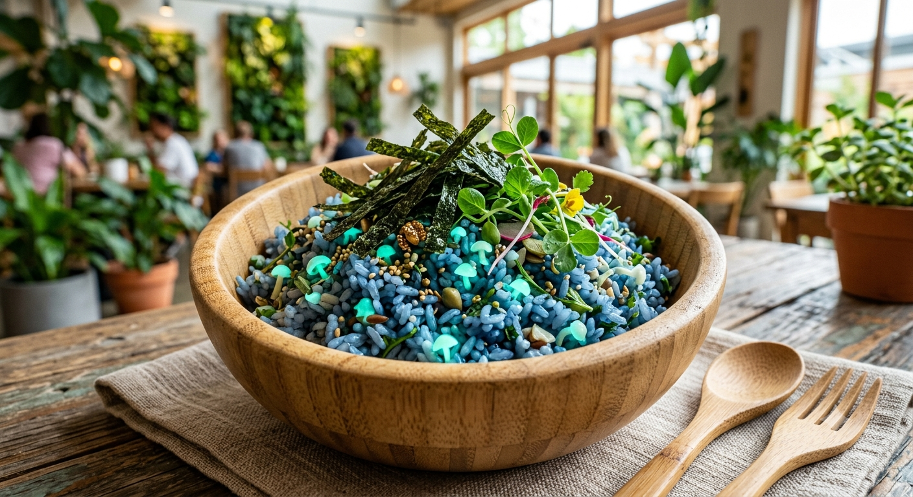

Cultura y Estilo de Vida
La herencia cultural de Validia fusiona la apreciación profunda por el arte clásico con un estilo de vida digital nativo donde el ocio creativo y la meditación forman el núcleo social.
Plato Típico: El Arroz de la Convergencia
El plato nacional por excelencia es el Arroz de la Convergencia. Mezcla granos de arroz azul optimizados con antioxidantes, champiñones bioluminiscentes picados que brillan suavemente en el plato y tiras de alga espirulina deshidratada.

Festividad Nacional: El Solsticio de Carga
Celebrado cada 21 de junio, el Festival del Solsticio de Carga festeja la abundancia de energía renovable. El país detiene de forma voluntaria todas las actividades industriales por 24 horas para una "oscuridad consciente".